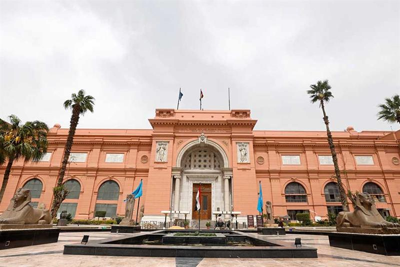
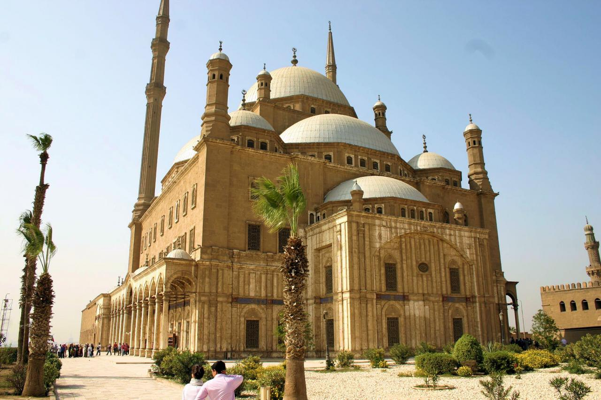
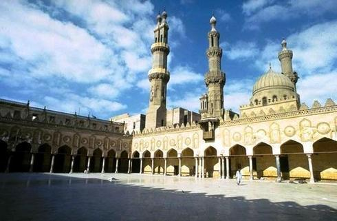
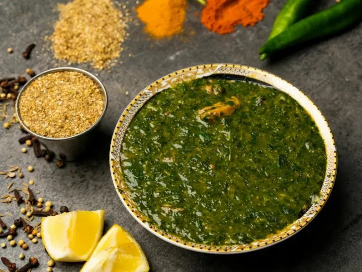
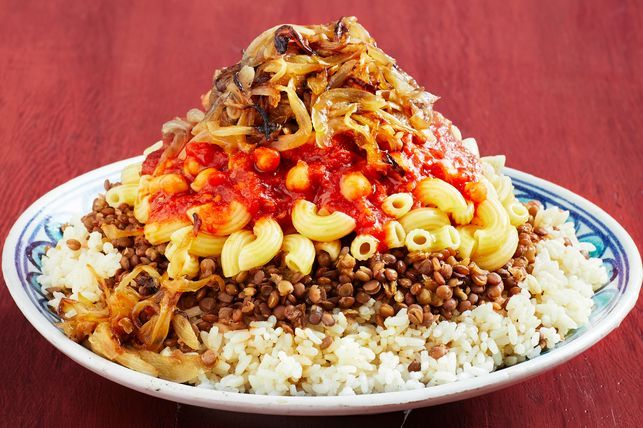
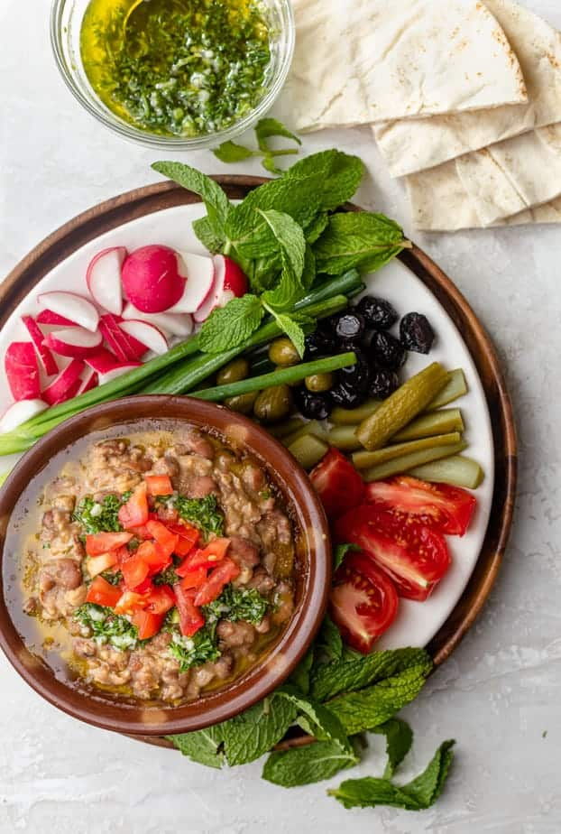

Historique
Le Caire, capitale de l'Égypte, est l'une des plus anciennes villes encore habitées au monde, avec une histoire remontant à plus de 4000 ans. Fondée en 969 après J.C. par les Fatimides, le Caire a été témoin de nombreux événements historiques majeurs, notamment l'ère pharaonique, l'occupation arabe et ottomane, ainsi que la période coloniale. La ville a été un centre culturel, politique et religieux important de la région, avec des monuments emblématiques tels que les pyramides de Gizeh et la grande mosquée d'Al-Azhar. Aujourd'hui, Le Caire reste un carrefour dynamique de l'Afrique du Nord, avec une population diversifiée et une scène culturelle vibrante, tout en conservant son riche patrimoine historique.
Places emblématiques

Les pyramides de Gizeh
Les Pyramides de Gizeh, situées près du Caire en Égypte, sont l'une des merveilles les plus emblématiques et mystérieuses de l'histoire humaine. Érigées il y a des millénaires, ces impressionnantes structures en pierre évoquent le génie architectural et la puissance des anciennes civilisations égyptiennes. La Grande Pyramide de Khéops, la plus grande et la plus célèbre des trois, demeure une prouesse inégalée de construction, défiant toujours notre compréhension moderne. Entourées de mystères et de légendes, les pyramides attirent des millions de visiteurs chaque année, fascinés par leur grandeur et leur symbolisme. Elles sont également le témoignage durable de la croyance égyptienne en l'immortalité et de leur complexe système de rites funéraires. Contempler les pyramides, c'est plonger dans le passé lointain de l'humanité et ressentir l'écho de la grandeur et de la spiritualité des anciens Égyptiens. Ces monuments majestueux continuent de susciter l'émerveillement et l'admiration, représentant à la fois le mystère de l'Égypte antique et la persévérance de l'ingéniosité humaine.

Le Musée égyptien du Caire
Le Musée égyptien du Caire est une vitrine inestimable de l'histoire et de la civilisation égyptiennes, abritant des milliers d'artefacts fascinants. Situé au cœur de la capitale égyptienne, ce musée est une immersion captivante dans le passé glorieux de l'Égypte ancienne. Parmi ses trésors les plus célèbres, on trouve les trésors de la tombe de Toutânkhamon, dont le masque funéraire en or massif est une icône mondiale de l'art antique. Les visiteurs peuvent également admirer une vaste collection de momies, de sarcophages, de statues et de papyrus, offrant un aperçu unique de la vie quotidienne, de la religion et de la culture égyptiennes. Avec ses salles richement décorées et ses expositions bien organisées, le musée offre une expérience immersive et éducative pour les amateurs d'histoire et les chercheurs du monde entier. C'est un trésor national et un joyau culturel qui continue d'inspirer et d'émerveiller les visiteurs, préservant le patrimoine unique de l'Égypte pour les générations futures.

La Citadelle de Saladin
La Citadelle de Saladin, construite au XIIe siècle, domine le Caire avec son architecture imposante. Elle abrite la Mosquée de Muhammad Ali, un symbole emblématique de la ville. Témoin de l'histoire égyptienne, elle a été le siège du pouvoir pendant des siècles. La citadelle attire des visiteurs du monde entier, fascinés par son riche patrimoine. Ses musées, jardins et bazars offrent une immersion dans la vie quotidienne égyptienne. Malgré les épreuves, la citadelle reste un témoignage vivant de la grandeur du peuple égyptien. Explorez ses ruelles sinueuses et ses salles historiques pour une expérience inoubliable. Sa vue panoramique à couper le souffle sur la ville et ses environs enchante les visiteurs.

La Mosquée Al-Azhar
La Mosquée Al-Azhar, fondée au Xe siècle au Caire, est l'une des plus anciennes et prestigieuses institutions d'enseignement islamique au monde. Avec son architecture magnifique et ses coursives ombragées, elle est un joyau de l'art islamique et un lieu de spiritualité pour les fidèles. Al-Azhar a joué un rôle central dans la diffusion du savoir religieux et scientifique à travers les âges, attirant des étudiants et des érudits de tous horizons. Son minaret élancé et son dôme imposant se dressent fièrement dans le ciel du Caire, témoignant de la grandeur de l'islam en Égypte. À l'intérieur, ses salles de prière ornées de motifs floraux et géométriques offrent un havre de paix et de recueillement. La mosquée abrite également une bibliothèque renommée, riche en manuscrits anciens et en ouvrages théologiques, faisant d'elle un centre d'étude et de recherche inestimable. Al-Azhar demeure non seulement un lieu de culte, mais aussi un symbole de l'unité et de la diversité de la communauté musulmane mondiale, accueillant des visiteurs du monde entier dans un esprit d'ouverture et de tolérance.
Plats locaux
Molokhia
Le plat molokhia, un mets traditionnel égyptien, est préparé à partir des feuilles de corète potagère finement hachées, cuites dans un bouillon parfumé à l'ail et au jus de citron. Cette soupe verdoyante est souvent accompagnée de riz ou de pain pita, et agrémentée d'un filet d'huile d'olive pour une saveur supplémentaire. Le molokhia est apprécié pour sa texture veloutée et son goût délicieusement terreux, faisant de lui un pilier de la cuisine égyptienne depuis des siècles. Servi chaud et garni de poulet, de viande ou de crevettes, ce plat réconfortant est un régal pour les papilles et un symbole de convivialité dans de nombreuses familles égyptiennes.

Koshari
Le Koshari, un plat emblématique de la cuisine égyptienne, est une délicieuse concoction de riz, de pâtes, de lentilles et d'oignons frits, le tout recouvert d'une sauce tomate épicée et d'une généreuse portion de pois chiches. Ce mets savoureux et réconfortant est souvent agrémenté de vinaigre et de piments pour une touche supplémentaire de saveur. Le koshari est non seulement délicieux, mais aussi économique et nourrissant, en faisant un aliment de base pour de nombreuses familles égyptiennes. Son mélange unique d'ingrédients en fait un plat polyvalent et satisfaisant, parfait pour une pause déjeuner rapide ou un repas copieux. Que ce soit dans les restaurants de rue animés du Caire ou dans les foyers chaleureux, le koshari est un favori incontournable de la gastronomie égyptienne, apprécié par les habitants et les visiteurs du monde entier pour sa simplicité et sa délicieuse complexité.

Foul medames
Le Foul Medames, un plat populaire de la cuisine égyptienne, est une délicieuse préparation de fèves foulées cuites lentement avec de l'ail, de l'huile d'olive et des épices savamment dosées. Cette recette traditionnelle, consommée depuis des siècles en Égypte, est souvent servie au petit-déjeuner, accompagnée de pain pita chaud, de légumes frais et d'œufs durs. Le Foul Medames est apprécié pour sa texture crémeuse et son goût riche et terreux, qui offre une véritable explosion de saveurs en bouche. Ce plat est non seulement délicieux, mais aussi nutritif, étant une excellente source de protéines végétales et de fibres. Que ce soit dans les restaurants de quartier ou sur les étals des marchés, le Foul Medames reste un incontournable de la gastronomie égyptienne, aimé par les locaux et les voyageurs en quête de nouvelles expériences culinaires authentiques.
